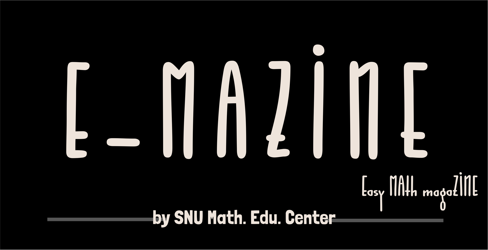
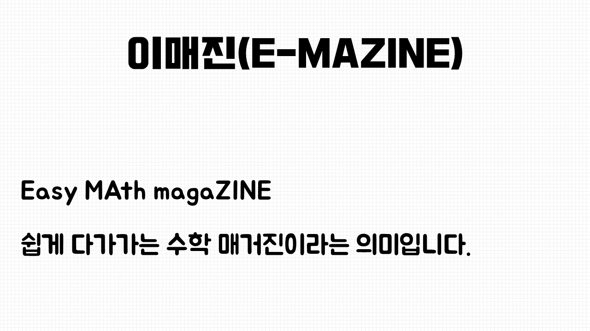
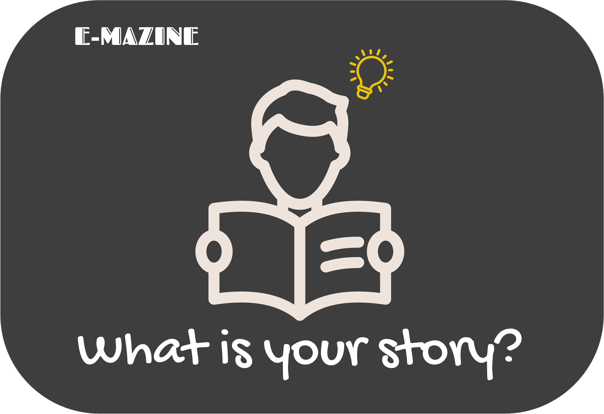

About E-MAZINE

안녕하세요. 서울대학교 수학교육센터 웹진 이매진[E-MAZINE]입니다.
1. 이매진(E-MAZINE)? 그게 뭐에요?
이매진(E-MAZINE)은 서울대학교 수학교육센터에서 만든 웹진의 이름입니다. 저희 수학교육센터에서는 대한민국의 수학교육 발전을 위해서 학생, 교사, 예비교사, 연구자, 그리고 일반인 간의 경계를 허문 지식 전달과 의사소통을 위한 웹 기반 플랫폼의 필요성을 느꼈습니다. 그러던 중, 2017년 봄, 개발을 시작하야 우여곡절 끝에 지금에 다다르게 되었습니다.
수학교육센터에서는 이매진(E-MAZINE)이 ‘공동 블로그’가 되기를 희망합니다. 많은 사람들이 개인 블로그에 글을 쓰는 것처럼, 다양한 위치에 있는 사람들이 수학, 또는 수학교육에 대한 자신의 생각을 담아 이매진(E-MAZINE)을 통해 공유하고 다른 사람들과 소통할 수 있다면, 수학교육 발전에 한 걸음 보탤 수 있으리라 믿습니다. 여러분들의 다양한 이야기를 저희에게 들려주세요! 그리고 이매진(E-MAZINE)을 통해 다른 사람들의 이야기에 관심을 표해주세요!
2. 왜 이름이 이매진(E-MAZINE)인가요?
이매진(E-MAZINE)의 이름이 어떻게 탄생했는지 많이들 궁금해 하실 거라고 생각합니다. ( 담당자의 착각…? ) 수학교육센터는 웹진의 이름을 짓기 위해 이름 공모전을 진행하였습니다. 이름 공모전은 이름 공모와 내부 투표를 통한 최종 후보 선정, 그리고 최종 온라인 투표 등 세 단계를 거쳐 진행되었습니다. 그 결과, 이매진(E-MAZINE)이라는 이름이 탄생하였습니다. 이매진(E-MAZINE)은 다음과 같은 뜻을 가지고 있습니다.

어때요? 심플하면서도 좋은 의미를 담고있죠?
3. 이매진(E-MAZINE)에서는 어떤 이야기를 나눌 수 있나요?
이매진(E-MAZINE)에서는 수학이나 수학교육에 관한 이야기라면 무엇이든 환영입니다! 무궁무진한 수학의 세계, 언제 들어도 신기하고 재밌는 수학사, 인류에게 위대한 업적을 남긴 수학자들, 교사 및 예비교사에게 도움이 될 수학 교구 및 공학도구 활용하기, 놀라운 실생활 속 수학, 알듯말듯 아리송한 수학퍼즐, 그리고 우리에게 늘 거대한 과제로 남아있는 수학교육에 대한 생각들 등 다양한 이야기를 나누고자 합니다. 더불어 진로에 대해 고민중인 청춘들을 위해 다양한 분야에서 종사하고 계시는 수학교육과 선배님들의 이야기도 들려드리려고 합니다.
하지만, 수학교육센터에서 웹진을 만든다고 여기저기 소문은 냈지만 아직 많은 분들의 이야기를 담지는 못했습니다. 그래서 많은 분들의 이야기를 이매진(E-MAZINE)에 담고자 여기저기 뛰어다닐 생각입니다! 저희에게 여러분의 이야기를 들려주세요! 담당자는 여기서 -> webzine.post@gmail.com 기다리겠습니다.
4. 이매진(E-MAZINE)에 대해 궁금한게 생긴다면…?
주저말고 연락주세요! 이매진(E-MAZINE) 담당자가 친절하게 답변을 해드릴 것입니다!! 여기로(snume.emazine@gmail.com) 메일을 주세요!
